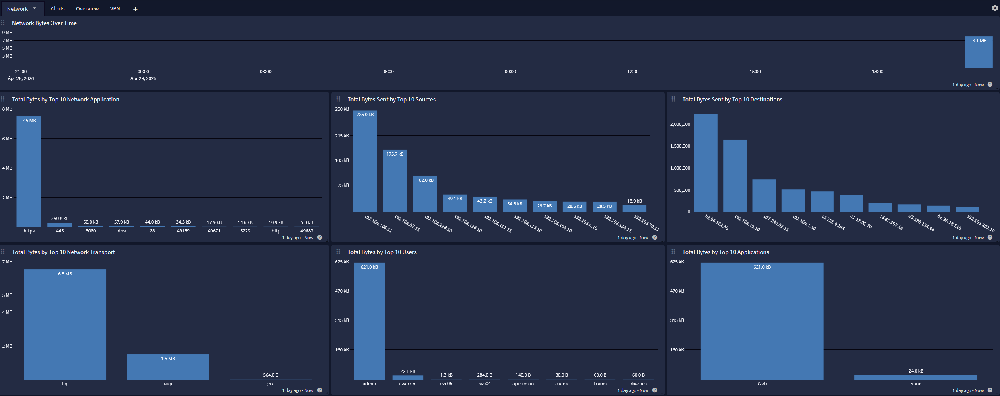

SonicWall Next-Generation Firewall (NGFW) provides advanced threat protection, network security, and application control for enterprise environments. This content pack supports NSsp, NSa, NSv, and TZ series appliances running SonicOS 6.5, 7.0, or later. The pack processes SonicWall enhanced syslog messages, providing normalization, enrichment, and GIM categorization across network traffic, VPN, authentication, security services, and system administration events.
SonicWall NGFW device(s) running SonicOS version 6.5, 7.0, or later
SonicWall configured to transmit syslog in enhanced format to your Graylog server
Graylog Server with a valid Enterprise license
SonicOS 6.5.x
SonicOS 7.0.x and later
SonicWall NSsp, NSa, NSv, and TZ series appliances
Configure your SonicWall device to send syslog messages to your Graylog server using the enhanced syslog format. The pack identifies SonicWall messages by matching key-value patterns (id=, sn=, time=, fw=) in the message content.
In the SonicWall management interface, navigate to Log > Syslog and configure:
Set the syslog server IP to your Graylog server address
Set the syslog port to match your Graylog Syslog input (default: 514/UDP or 1514/TCP)
Enable Enhanced Syslog format for full field extraction
Select the event categories to forward (recommended: all categories for complete visibility)
This technology pack includes 1 stream:
Hint: If this stream does not exist prior to the activation of this pack then it will be created and configured to route messages to this stream and the associated index set. There should not be any stream rules configured for this stream.
This technology pack includes 1 index set definition:
Hint: If this index set is already defined, then nothing will be changed. If this index set does not exist, then it will be created with retention settings of a daily rotation and 90 days of retention. These settings can be adjusted as required after installation.
Parsing rules to extract SonicWall NGFW enhanced syslog into Graylog schema compatible fields
GIM event type categorization and enforcement fields for supported SonicWall NGFW events
SonicWall NGFW Spotlight dashboard with Overview, Alerts, Network, and VPN tabs
GIM categorization is provided for the following SonicWall event codes:
| GIM Code | GIM Event Type | Count | Vendor Categories Covered |
|---|---|---|---|
| 120000 | network connection | ~140 | Network/TCP, UDP, ARP, IP with connection data (source/destination IPs and ports); VoIP; SD-WAN; WAN Acceleration; Firewall |
| 129999 | network default | 379 | Network events without full connection data: DHCP Client, PPPoE Client, Interface status, General, some TCP/UDP/ARP/Ethernet events lacking source/destination |
| 120100 | network routing | ~10 | Network/Routing |
| 120200 | network connection initiated | 1 | Network (specific connection events) |
| 120300 | network connection ended | 1 | Network/TCP (connection closed, event 537) |
| 120600 | ICMP request | 15 | Network/ICMP |
| 100000 | logon | ~46 | Network/802.1X Access; Users/Authentication Access; VPN Client auth |
| 100500 | credential validation | ~54 | VPN/VPN PKI (certificate validation); Admin authentication |
| 100501 | credential error | 13 | Authentication failures |
| 101000 | special logon | 7 | Administrator authentication |
| 101001 | access notice error | 24 | VPN client access |
| 102500 | logoff | 8 | User session disconnect |
| 109999 | authentication default | ~12 | Users (non-auth-access events) |
| 300001 | network detection | ~85 | Security Services: Botnet Filter, Content Filter, Geo-IP, RBL, App Control, DPI-SSL/SSH; Anti-Spam |
| 301000 | host malware detection | ~19 | Security Services: GAV, Anti-Virus, Next-Gen Anti-Virus, Anti-Spyware |
| 301002 | host detection (HIPS) | 3 | Security Services/Endpoint Security |
| 210000 | service started | 5 | System/Service lifecycle |
| 210100 | service stopped | 5 | System/Service lifecycle |
| 211000 | service configuration | 61 | Firewall Settings (all configuration changes) |
| 211504 | service error | 4 | System/Service failures |
| 211501 | service removed | 1 | System/Service removal |
| 219999 | service event | ~440 | VPN negotiation (IKE/IKEv2/IPsec/PKI); System status; High Availability; Wireless; SSL VPN; DHCP; operational events |
| 220000 | audit log cleared | 1 | Log/Clear Log (event 5) |
| 229999 | audit event | 16 | Log management operations |
| 260000 | system time changed | 2 | System/Time synchronization |
| 180000 | HTTP message | 4 | HTTP events |
| 180200 | HTTP communication | 3 | HTTP/Web events |
| 140200 | DNS response | 1 | DNS events |
Fields extracted from all SonicWall NGFW events.
| Field Name | Description |
|---|---|
| event_source_product | Set to sonicwall_ngfw |
| event_code | SonicWall event ID |
| event_created | Timestamp from the SonicWall device |
| event_severity | Normalized severity (critical, high, medium, low, informational) |
| event_severity_level | Numeric severity level (1-5) |
| event_action | Action taken (allowed, blocked) |
| event_outcome | Outcome (success, failure) |
| event_duration | Connection duration in seconds |
| source_ip | Source IP address |
| source_port | Source port number |
| source_mac | Source MAC address |
| destination_ip | Destination IP address |
| destination_port | Destination port number |
| destination_mac | Destination MAC address |
| network_transport | Protocol name (tcp, udp, icmp, etc.) |
| network_interface_in | Ingress interface name |
| network_interface_out | Egress interface name |
| network_bytes | Total bytes (source + destination) |
| network_packets | Total packets (source + destination) |
| source_bytes_sent | Bytes sent from source |
| destination_bytes_sent | Bytes sent from destination |
| user_name | Username for authentication events |
| application_name | Application name for auth events or detected application |
| service_name | Service name for service lifecycle and config events |
| alert_signature | Threat/alert name for detection events |
| alert_signature_id | Threat/alert ID |
| alert_category | Alert category (from vendor event group) |
| alert_severity | Alert severity text |
| alert_severity_level | Alert severity numeric level |
| vendor_event_category | SonicWall event category (Network, VPN, Security Services, etc.) |
| vendor_event_group | SonicWall event group (subcategory) |
| vendor_event_severity | Original SonicWall severity text |
| vendor_event_severity_level | Original SonicWall severity level (0-7) |
| vendor_name | Set to sonicwall |
| event_observer_id | SonicWall device serial number |
| vendor_message | Original event message text |
The SonicWall NGFW Spotlight offers a dashboard with the following tabs:

